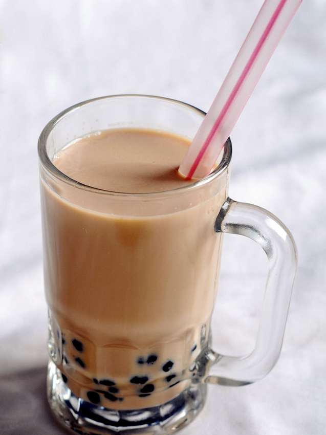

Fresh tea drink feature
Why Salty Milk Tea Suddenly Took Off in 2026
If the previous wave of Chinese tea-drink language was about light milk, hydration feel, and drinks that seemed more tea-forward, one of the hardest-to-ignore signals in early 2026 is clearly savory drift. Salty milk tea is no longer limited to traditional salty tea contexts or one-off stunt launches. Major chains are reframing savory notes as an urban, discussable, highly photographable tea-drink language: salted fromage, seaweed flakes, mushroom white sauce, truffle, butter, sauce-like aromas, and regional savory cues. The real story is not that the drinks sound strange. It is why so many brands suddenly want to push those sounds into the mainstream.
What makes salty milk tea worth tracking is that it is not just a flavor. It is a new posture. Brands are trying to turn a drink that is easily read as sweet, snack-like, and afternoon-coded into something more complex, more mature, and more food-like. Sweetness does not disappear, but it is no longer allowed to dominate without resistance. Once savory notes enter the cup, the whole drink gains a new interpretive layer: sweetness feels restrained, milk feels fuller, and the tea base can be discussed as layered rather than merely pleasant.
That is also what makes this topic sharply different from the site’s earlier feature on breakfastized tea drinks. Breakfastization is about time slots and morning frequency. Salty milk tea is about flavor authority. Once consumers have become familiar with flowers, fruit, light milk, and reduced-sugar rhetoric, how does a brand still produce visible novelty? One answer is not to make tea gentler, but to make it heavier, more arguable, and more obviously tied to the language of food.
What this feature is tracking
Main question: why salty milk tea moved from fringe curiosity to mainstream discussion in 2026 Key threads: salted fromage, seaweed, mushroom and sauce language, regional savory cues, sweetness fatigue, menu sameness, short-video and comment-section spread For readers who want to understand why Chinese tea drinks are increasingly behaving like flavor curation rather than simple menu expansion
1. Why did this take off now?
Because sweetness alone is no longer enough. Over the last few years, brands kept refreshing menus through truer fruit, brighter florals, lighter milk structures, and lower-sugar framing. Consumers still buy those drinks, but “pleasant” by itself is no longer enough to guarantee that a launch will break out. A new drink now needs a sentence that people can repeat. It needs to sound like breakfast, or vegetables, or fresh milk, or in this case, something unexpectedly salty.
Salty has a major structural advantage in social media: it creates contrast before the first sip. A consumer does not need to taste “salted fromage,” “seaweed,” “butter,” “mushroom,” or “truffle white sauce” to begin imagining the result. That pre-tasting imagination already produces clicks, reposts, and arguments. Compared with “a little smoother” or “a little lighter,” salty is simply more narratable.
There is also an industry reason. In a higher-quality competition phase, brands need innovation that looks unmistakably like innovation. Swapping one fruit or adjusting sweetness no longer proves much. Savory milk tea, by contrast, can be framed as flavor research, regional ingredient exploration, or a more mature sensory upgrade. It lets brands show their work.
2. Is salty milk tea really selling salt, or a more mature flavor stance?
More often, it is selling the feeling that sweetness has been disciplined. Most so-called salty milk teas are not literally as salty as soup or sauce. Their real job is to push sweetness out of the lead role. If consumers feel that a drink is less cloying, more layered, and somehow more serious, the product has already succeeded. Salt in many of these drinks functions less as a dominant taste than as a structural editor.
That is why the category works so well online. Many consumers do not necessarily want a truly difficult tea drink every day, but they do like the idea that they chose something with slightly higher taste complexity. Salty milk tea lowers the threshold for that self-image. You do not need deep tea knowledge to say a cup feels more like a composed dish, a richer dessert logic, or a more grown-up milk tea.
In other words, salty milk tea is not just fighting sweet milk tea. It is helping brands produce a more judgment-based kind of consumption. People are still buying drinks, but they are increasingly reviewing them as if they were evaluating plated flavors, pastry ideas, or café pairings.
3. Why do seaweed, mushroom, butter, and sauce-like words show up so often?
Because “salty” by itself is too abstract. It needs support from words that feel visual, culinary, and place-based. Seaweed suggests a finishing garnish. Mushroom and truffle suggest restaurants, heat, and depth. Butter and white sauce suggest pastry, dairy richness, and a more European or bakery-adjacent tone. Sauce aromas suggest fermentation, locality, or stronger regional flavor memory. Together, these words translate an abstract savory idea into a scene people can imagine.
That is also why very few successful launches are called simply “salty milk tea.” The products that travel best tend to attach themselves to a fuller world: region, dish logic, ingredients, dairy craft, pastry cues, or a whole tabletop atmosphere. Brands do not only want a drink to sound unusual. They want it to sound sourced.
4. Why does the Chinese internet respond so strongly to these heavier flavor experiments?
Because they are ideal comment-section products. What breaks out is rarely just “this tastes good.” It is “what does this even taste like?” One person says it reminds them of seaweed bread. Another says it feels like a savory cream cap turned into a whole beverage. Another says it is better than expected. Another says it tastes like liquid seasoning. The stronger the disagreement, the stronger the spread.
Salty milk tea also gives consumers fresh vocabulary. The old repertoire—refreshing, not greasy, floral, clean tea base—has been used heavily. Savory launches immediately generate new descriptive territory: weird, addictive, meal-like, snack-like, bread-like, regional, restaurant-like, truffle-ish, dairy-heavy, unexpectedly smooth. Once the language gets richer, platforms have more reason to amplify the content.
That is why this topic is richer than a simple launch roundup. It reveals a deeper rule of tea-drink virality: once the industry enters a sameness problem, the most valuable products are not always the most delicious. They are often the most repeatable in language.
5. Is this the same thing as traditional salty milk tea?
No. The two will often be mentioned together because China already has older savory tea traditions: Tibetan butter tea, Mongolian milk tea, grassland tea, and other regional forms prove that salt and tea are not inherently incompatible. But the 2026 urban tea-chain version is mostly a commercial flavor translation, not a direct continuation of those daily traditions.
That distinction matters. Traditional salty tea serves specific climates, food systems, bodily needs, and ways of life. The urban chain version mainly serves novelty, social retelling, launch cycles, and visual content. It borrows legitimacy from the fact that savory tea has precedents, but it does not simply inherit their logic.
At the same time, brands benefit from that cultural memory. Savory notes sound less random if they can be framed as part of a wider tea world that always contained more than sweetness, only now rendered through shopping-mall menus, social media aesthetics, and highly managed retail language.
6. Can salty milk tea move from spectacle to stable product line?
In the short term, yes. In the long term, maybe not in its loudest form. It is excellent for seasonal launches, regional specials, collaborations, and high-discussion moments because it arrives with built-in content. But becoming a high-frequency permanent choice is much harder. Most consumers are willing to try complexity now and then, but not necessarily to give their first-choice purchase to complexity every week.
If savory milk tea wants to stay, it has to move from “that sounds strange, I want to try it” to “that is not strange at all, it is actually easier to keep drinking than standard sweet milk tea.” That requires precision. A drink has to be memorable without becoming alienating; more complex without turning into liquid snack theater.
So the most likely outcome is that the loudest savory names may not stay forever, but the broader logic they introduced—restrained sweetness, thicker milk structure, food-like cues, regionality, and a more mature flavor posture—will quietly spread into more normal menu items.

7. What bigger anxiety does this trend expose in the tea-drink industry?
It exposes the pressure for innovation to be visibly legible. Once store counts, price bands, base ingredients, and supply-chain efficiencies begin to converge, brands have to keep proving that they still know how to invent. The problem is that truly repeatable innovation is often not dramatic, while dramatic innovation is often not very repeatable. Salty milk tea sits right on that border.
It shows how much modern tea drinks are now part of a content economy. A product does not only need to be drunk. It needs to be described, filmed, captioned, argued over, and screen-grabbed. Drinks that feel closer to meals, pastry, regional cuisine, or culinary experimentation are not appearing by accident. They are especially well suited to platforms that reward quick interpretive conflict.
This is also a useful reminder for readers: “hot” does not automatically mean “everyday mainstream.” Many heavily discussed tea drinks are performing attention work as much as sales work. They matter, but not always because they become permanent top sellers. Sometimes they matter because they let a brand look inventive again.
8. Why is this worth tracking in the drinks section going forward?
Because it is not a single-launch story. It is a clear flavor-direction story. It differs sharply from the site’s existing pieces on breakfast timing, health halos, and lighter milk rhetoric. What it captures is a different turn: once sweet-coded novelty starts to flatten, how do tea brands bend toward savory, thicker, more food-like, more mature taste systems?
It also has strong follow-through potential. Today the discussion is about salted fromage, seaweed, mushroom sauce, and savory cream structures. The next stage could involve stronger regional savory borrowing, deeper links with pastry and café menus, more light-meal integration, and even blurrier edges between tea drinks and coffee-adjacent retail formats. This is not just a one-off hot post. It is an entry point into a broader shift.
Continue reading: Fresh Tea Drinks, Why Tea Drinks Are Becoming “Breakfastized” in 2026, and Fruit-veg tea, fiber, satiety, and the health halo problem.
Source references
Hongcan Industry Research Institute, Tea Drinks Category Development Report 2026, Hongcan coverage on 2026 tea-drink direction shifts, Tencent News repost on savory milk tea and regional ingredient trends, Xinhua food coverage on tea-drink innovation, and CHAGEE fresh milk tea series.